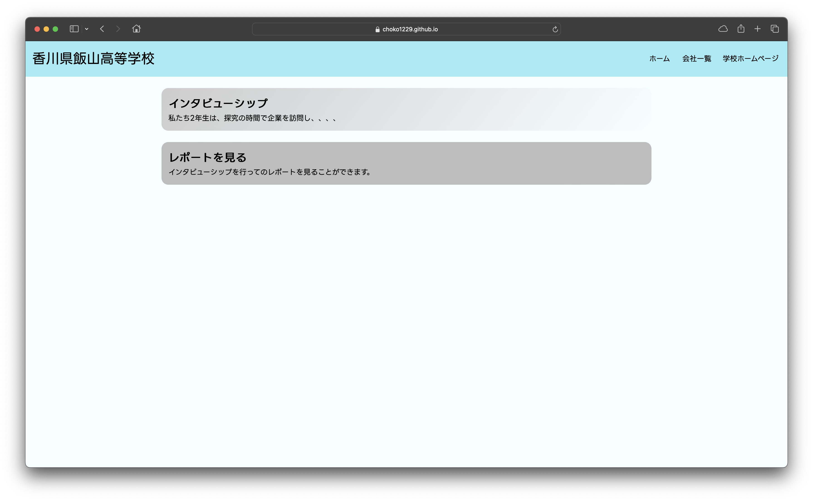

実際に作ったページにアクセスすることができます。
インタビューシップの発表をまとめて見せるため。
また、次年度生がみてどのようなものかがわかるような記録として作成した。
<!DOCTYPE html>
<html lang="ja">
<head>
<meta charset="UTF-8">
<meta name="viewport" content="width=device-width, initial-scale=1.0">
<link rel="stylesheet" href="style.css">
<title>時間によって背景が変わるやつ</title>
</head>
<body>
<div class="background-container" id="backgroundContainer">
</div>
<script src="script.js"></script>
</body>
</html>